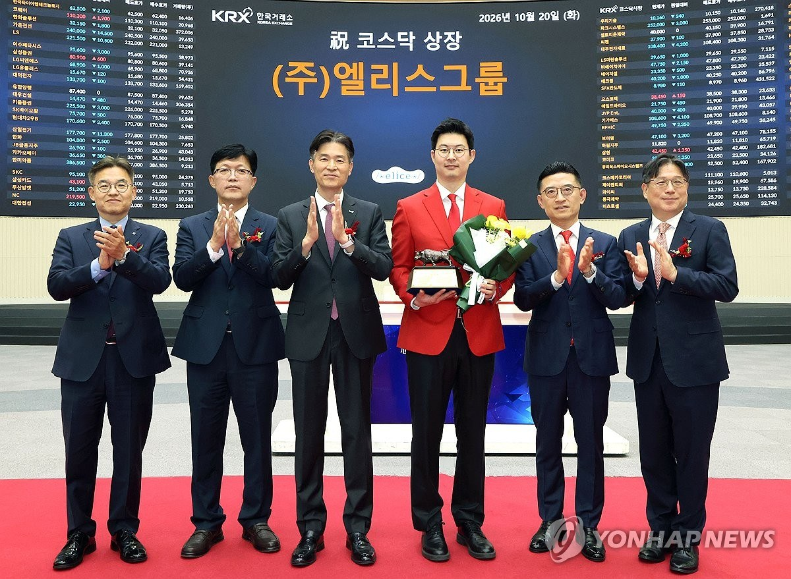

01 · KR
엘리스그룹 IPO
AI 인프라 성장 기대를 시장 검증 앞에 세우다
연합뉴스는 AI 전환·AI 클라우드를 주요 제품으로 둔 엘리스그룹이 코스닥 첫 거래일 6만1,500원에 마감해 공모가 9만500원보다 32.04% 내렸다고 보도했다. AI 인프라 투자 열풍이 기업별 수익성과 현금흐름을 다시 보게 만드는 장면이다.
원문 보기 ↗ADDIT INSIGHT
AI 기업의 성장 스토리는 투자 규모보다 반복 가능한 매출·원가·현금흐름으로 설명할 수 있어야 한다.